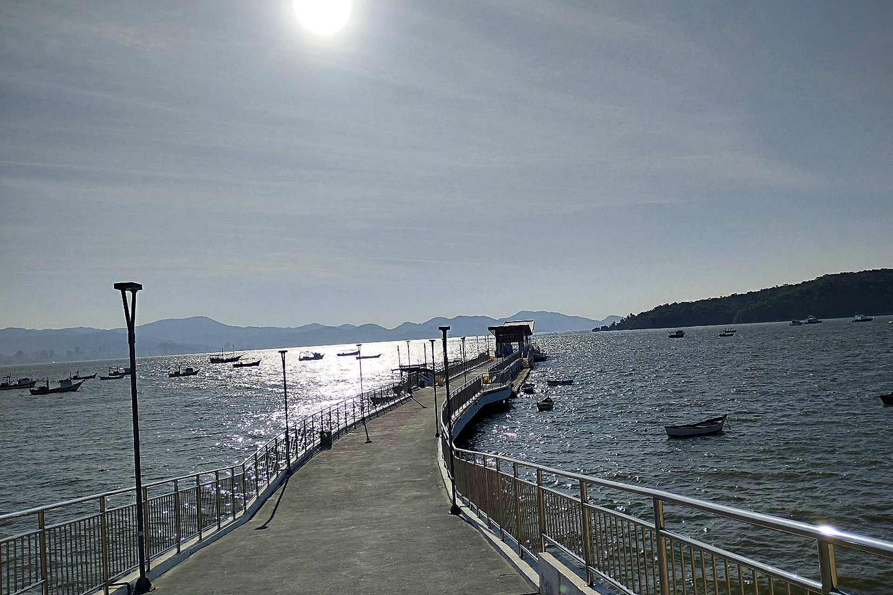
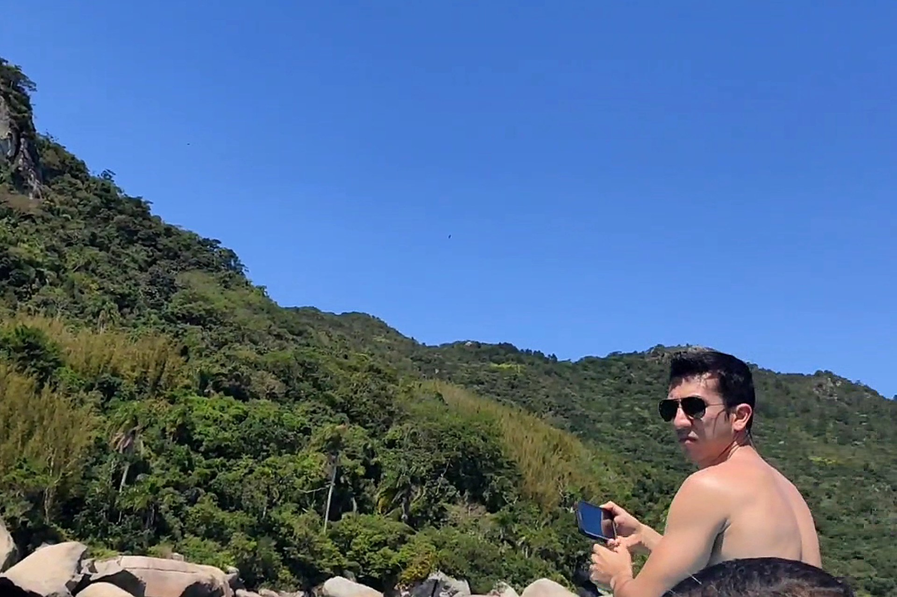
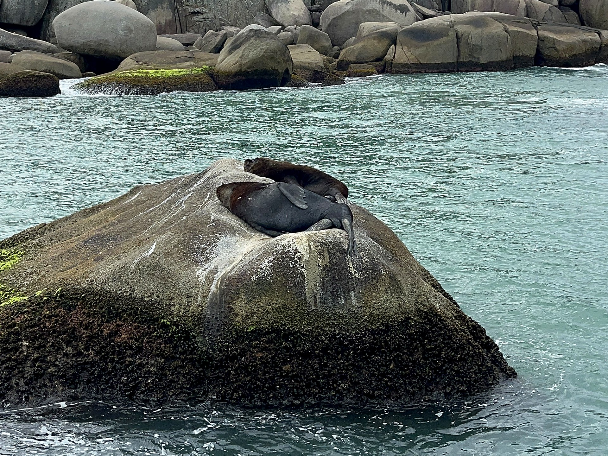
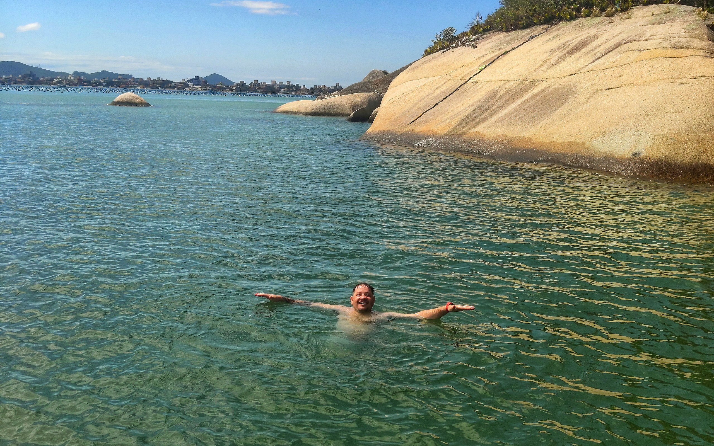
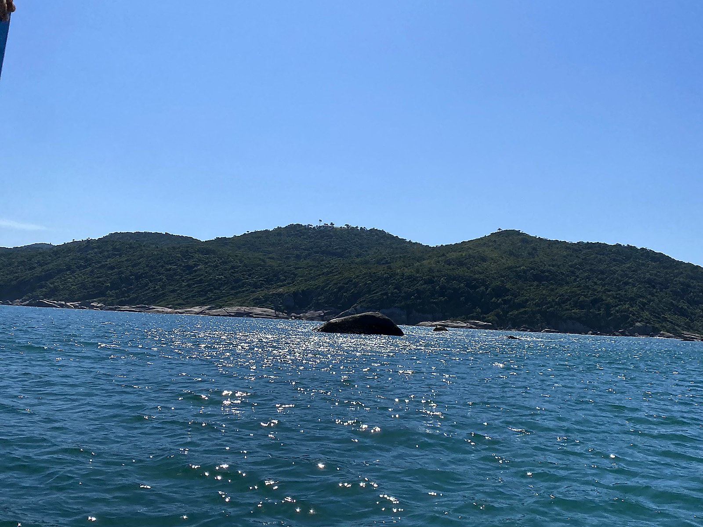
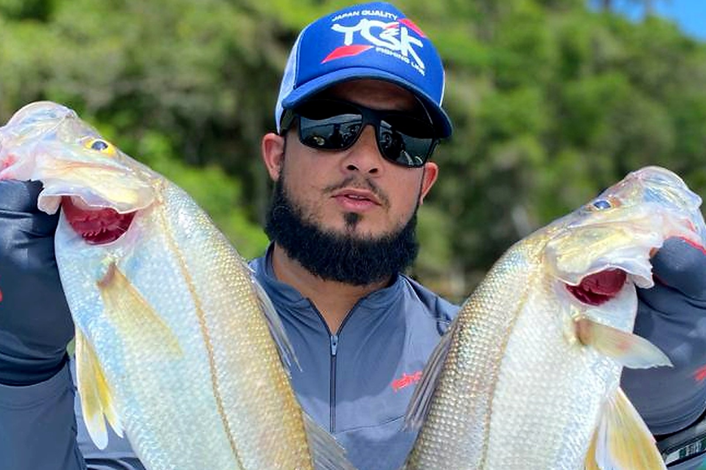
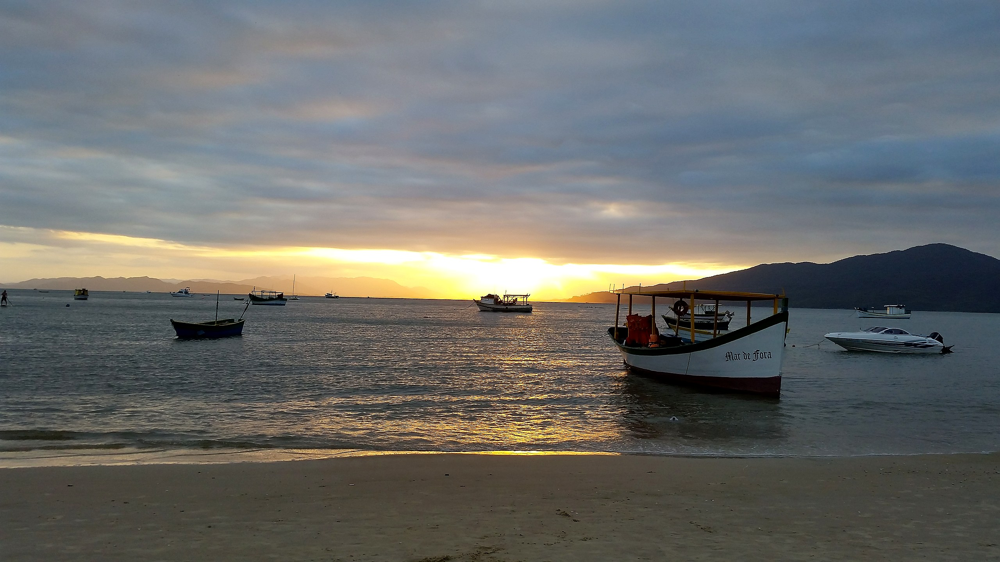
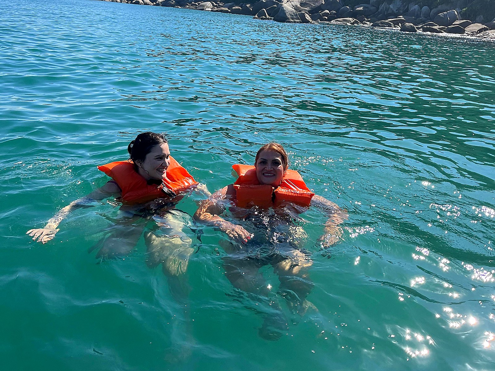
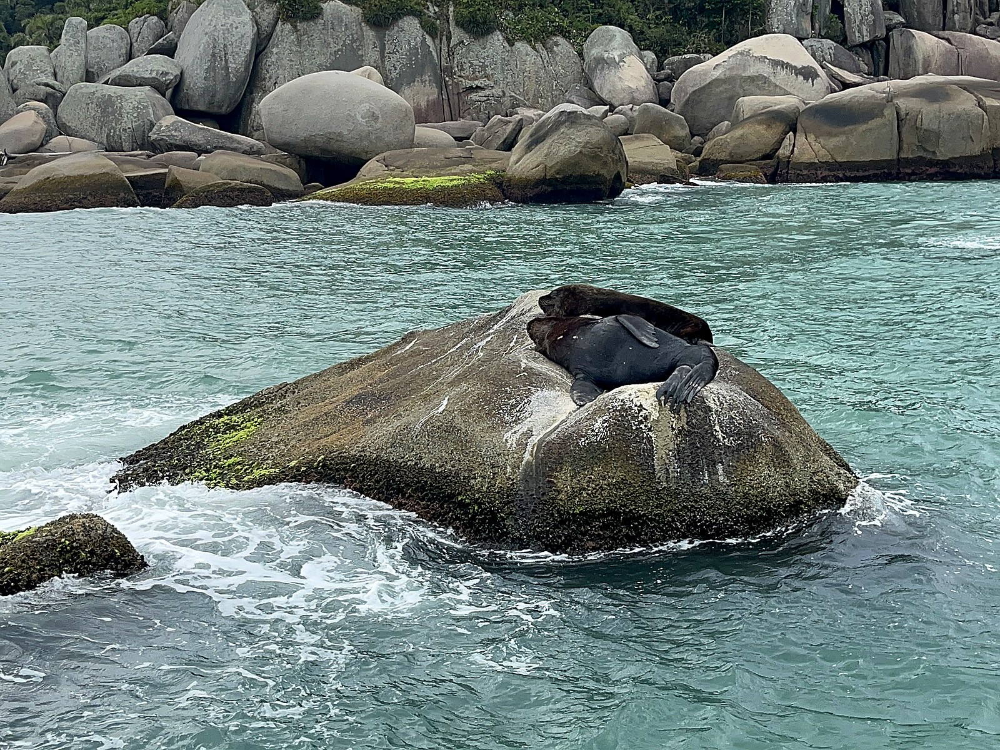
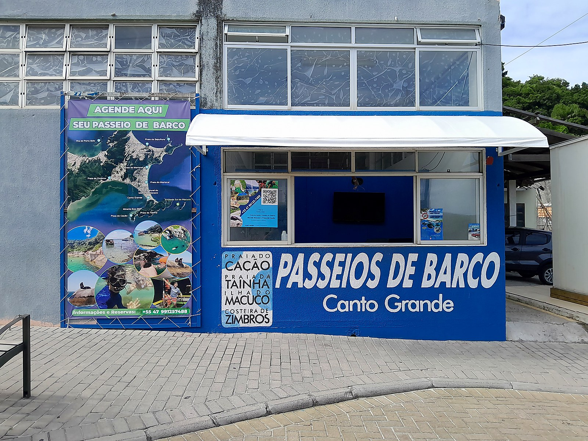

Embarque Oficial · Trapiche de Canto Grande
★ 4,9 no Google · 26 Avaliações Reais
A Ilha do Macuco e a Baía de Zimbros com quem nasceu neste mar.
Navegue em águas calmas com os pescadores nativos de Canto Grande: avistamento de leões-marinhos nas pedras, vista da Praia da Tainha e mergulho nas águas cristalinas da Praia do Cação.
10h e 14hSaídas regulares diárias + Barco Privativo
Mar de DentroÁguas abrigadas e tranquilas para toda a família
Leões-MarinhosAvistamento frequente na Ilha do Macuco
27°12'02.0"S · 48°29'54.8"W● EMBARQUE ABERTO
Carta Náutica — Canto Grande
Saída em frente ao Trapiche do Canto Grande (guichê azul da Associação).
01 Trapiche de Canto Grande
Embarque
02 Costeira de Zimbros & Tainha
Panorâmico
03 Enseada Sul · Ilha do Macuco
Leões-Marinhos
04 Praia do Cação
Parada p/ Banho
Roteiro Oficial no Mapa do Trapiche
Quatro cenários intocados em uma única travessia artesanal.
Esqueça barcos superlotados com som alto. Aqui você navega nas embarcações tradicionais dos pescadores de Canto Grande, ouvindo histórias reais de cada ilha e enseada.
PARADA 01 · EMBARQUE

Trapiche de Canto Grande
Recepção com o Lucas no nosso guichê azul em frente ao Trapiche. Embarque tranquilo nas águas abrigadas do Mar de Dentro.
PARADA 02 · COSTEIRA

Zimbros & Praia da Tainha
Navegação panorâmica costeando a Mata Atlântica preservada, fazendas marinhas e a enseada esmeralda da Praia da Tainha.
PARADA 03 · FAUNA MARINHA

Ilha do Macuco (Sul)
Aproximação segura às pedras da Ilha do Macuco, ponto de descanso de leões-marinhos, aves marinhas e aparições de golfinhos.
PARADA 04 · MERGULHO

Praia do Cação
Parada para banho em uma piscina natural deserta, cercada de pedras de granito e águas tão transparentes que você nada entre os peixinhos.
EXCLUSIVO · SEU GRUPO

Barco Fechado p/ Família
Reserve a embarcação inteira só para sua família ou amigos, escolhendo o tempo de parada em cada praia deserta de Zimbros.
VIVÊNCIA · CULTURA LOCAL

Roteiro Pesca & Costeira
Saída dedicada a quem deseja vivenciar a pesca artesanal nas costeiras da Ilha do Macuco com quem conhece cada parcél.
FIM DE TARDE · MAR DE DENTRO

Pôr do Sol em Canto Grande
O pôr do sol mais famoso de Santa Catarina visto de dentro d'água, com o céu dourado espelhado nas águas calmas da baía.
Agendamento Direto com a Associação
Monte seu passeio e confirme sua vaga pelo WhatsApp.
Selecione o horário de saída e a quantidade de pessoas. Sua mensagem chega pronta diretamente no nosso atendimento do Trapiche de Canto Grande.
1. Escolha a Saída ou Modalidade
2. Data e Tripulantes
2 adultos
0 crianças
CARTÃO DE EMBARQUETRAPICHE CANTO GRANDE
Resumo da sua Experiência
Roteiro / Horário:Roteiro Ilha do Macuco & Praia do Cação — Saída 10h00
Data planejada:A combinar
Passageiros:2 adultos
Perfil:Família (banho calmo + leões-marinhos)
Ponto de encontro:Guichê Azul · Em frente ao Trapiche
Atendimento humano rápido pelo Lucas e equipe · Sem taxas de intermediários.
Embarcações tradicionais de madeira ("Mar de Fora" e frota da Associação) no Mar de Dentro.

Coletes e espaguetes flutuadores inclusos para banho seguro.

Respeito à natureza e aproximação tranquila na Ilha do Macuco.
Pescadores Nativos de Canto Grande
Mais que um passeio turístico: a história viva da vila.
Na Associação de Pescadores, você é recebido por quem conhece cada correnteza, cada pedra e cada segredo da península de Bombinhas.
⚓
Capitão Miguel — Mestre do Mar de Dentro
Elogiado em dezenas de avaliações pelo carinho com as famílias, pelas histórias sobre a pesca da tainha e pela atenção aos detalhes (já voltou no mar até para resgatar boné de passageiro!).
🛟
Lucas — Recepção no Guichê do Trapiche
Atendimento transparente e acolhedor logo na entrada do Trapiche de Canto Grande, orientando horários, maré e dicas das melhores praias.
🐬
Navegação Calma & Sem Pressa
Embarcações cobertas, escada de popa confortável para descer na Praia do Cação e tempo real para curtir o banho de mar.
Registros Reais dos Nossos Passeios
Cores reais de um mar que não precisa de filtro.
Toque em qualquer fotografia para ampliar em alta definição. Todas as imagens foram registradas nos passeios da Associação em Canto Grande.
Praia do Cação · Parada de Banho
Águas verde-esmeralda abrigadas do vento ao pé da Mata Atlântica
Ilha do Macuco
Encontro de perto com os leões-marinhos nas pedras
Mergulho Livre
Flutuação tranquila entre cardumes de peixinhos
Visibilidade Cristalina
Piscinas naturais acessíveis pelo mar
Conforto Familiar
Barcos tradicionais com sombra e estabilidade

Ponto Oficial
Nosso guichê azul em frente ao Trapiche
Nota 4,9 de 5,0 no Google Maps
O que dizem quem embarcou conosco no Trapiche.
Depoimentos reais publicados espontaneamente no Google por famílias e viajantes que navegaram com o Capitão Miguel e o Lucas.
★★★★★
“O passeio foi incrível! Vimos golfinhos, leões-marinhos e na parada para banho de mar muitos peixinhos. Um agradecimento especial ao capitão da embarcação por toda atenção e gentileza — meu boné caiu no mar e ele prontamente deu a volta para buscá-lo!”
Kelly MüllerAvaliação Google ★ 5,0
★★★★★
“Passeio excelente! Muito calmo, com uma vista maravilhosa e uma parada para banho numa praia de águas cristalinas! O Miguel, que nos guiou no passeio, conhece muito a região e foi nos contando várias curiosidades no caminho!”
JessLocal Guide ★ 5,0
★★★★★
“Atendimento excelente do Lucas ali no guichê do trapiche e passeio inesquecível com o seu Miguel. Vimos vários leões-marinhos na Ilha do Macuco e a parada na Praia do Cação é um paraíso de água limpa e tranquila.”
Everton Santana & VisitantesAvaliação Google ★ 5,0
Ponto Oficial de Embarque
Fácil de achar: casinha azul em frente ao Trapiche.
Estamos localizados na Rua Jequitibá, s/nº, exatamente na entrada do Trapiche do Canto Grande (Mar de Dentro), Bombinhas - SC.
Passeio de Barco — Associação de Pescadores
📍 Endereço: Rua Jequitibá, s/nº — Em frente ao Trapiche de Canto Grande, Bombinhas - SC (CEP 88215-000)
⏰ Atendimento no Guichê: Todos os dias, das 08h00 às 20h00
⛵ Saídas Regulares: 10h00 e 14h00 (chegar 20 min antes do embarque)
Quais são os horários de saída do passeio de barco?
+
Nossas saídas regulares para o Roteiro Baía de Zimbros, Ilha do Macuco e Praia do Cação acontecem todos os dias às 10h00 e às 14h00. Também realizamos passeios privativos e de pôr do sol em horário personalizado sob agendamento.
O mar balança muito? Crianças e idosos podem ir tranquilamente?
+
Sim! Todo o nosso roteiro acontece no chamado Mar de Dentro (Baía de Zimbros), uma enseada naturalmente protegida de ondas fortes. É o passeio mais calmo e seguro de Bombinhas para crianças pequenas, idosos e quem busca tranquilidade.
Preciso saber nadar para aproveitar a parada na Praia do Cação?
+
Não precisa! Nossas embarcações contam com coletes salva-vidas homologados pela Marinha para todas as idades e flutuadores (espaguetes) para você boiar com total segurança nas águas rasas e transparentes da Praia do Cação.
Posso levar cooler com bebidas, lanches ou meu pet?
+
Com certeza! Você pode trazer água, bebidas, frutas e lanches para curtir a bordo. Pets dóceis também são muito bem-vindos — basta nos avisar pelo WhatsApp ao reservar sua vaga.